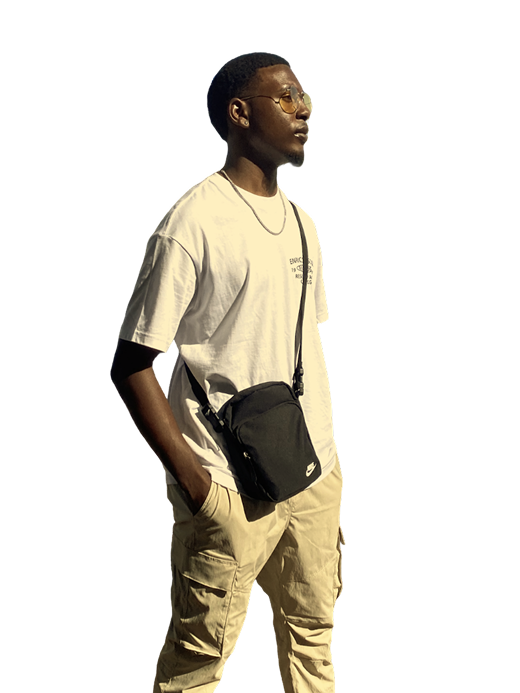

AI Systems Engineer
Available Now
Help 100 businesses build million-dollar workflows
Pending / 100What I am
hired to do
I join as a focused builder or a technical lead, and integrate into the workflow you already run.
Multi-Agent Orchestration
Coordinated AI agent teams. LLM routing, task delegation, human-in-the-loop checkpoints, structured JSON pipelines.
Core offeringVoice AI Platforms
Real-time voice with LiveKit, Twilio telephony, and SSE streaming. Single-agent assistants through parallel multi-tenant dispatch.
RAG & Memory Systems
ChromaDB, Pinecone, and custom retrieval pipelines. Persistent memory, document understanding, grounded responses.
LLM Evaluation & Hardening
Evaluation pipelines for AI output. Structured JSON validation, failure-mode reduction, automated audit cycles.
AI Systems Consulting
Architecture reviews, model selection, prompt engineering, and roadmapping for teams scaling AI products.
Builder Resources
Claude.md templates, prompt playbooks, and architecture checklists. Free, no email gate.
FreeHow I decide when AI meets real stakes
Design background means these systems get built for the people who operate them, not just to compile.
Mindset
- Build for reliability before novelty
- Ship small, iterate with real feedback
- Prefer clarity over cleverness
Ethics
- Human in the loop for critical actions
- Transparent outputs and traceable decisions
- Privacy-respecting data boundaries
Operating style
- Strong contracts between systems
- Measured latency, cost, and failure rates
- Production checks before scale
How we
work together
Clear milestones, visible progress, and a handoff that leaves you able to run the system without me.
The process
Five stages, each with something you can see and sign off on.
Discovery
A deep-dive call on your goals, constraints, and what success actually looks like.
Architecture
I map agent design, data flows, APIs, and deployment strategy.
Build
Focused sprints with clear milestones. Fast, without cutting the corners that matter.
Deploy
Deployment, documentation, and handoff. Everything you need to run it.
Iterate
Available for improvements, new features, and scaling as needs evolve.
Engagement models
Subcontract through an agency, run a fixed-scope project, or keep me on retainer.
| Engagement | Starter | Most popular Growth | Enterprise |
|---|---|---|---|
| Best for | Solo founders testing where AI fits | Teams shipping a real AI product | Companies scaling AI across the org |
| Architecture consultation | 2 hrs / month | Ongoing | Ongoing + roadmap |
| Agent / automation build | One build | Multi-agent system | Multi-agent platform |
| RAG & memory pipeline | — | ||
| Evaluation suite & guardrails | Templates | ||
| Product UI / UX design | — | Web or app | End to end |
| Revision rounds | 1 | Up to 3 | Unlimited |
| Support | Priority | Dedicated line + monthly calls | |
| Start here | Start here | Start here |
Also available for agency subcontract and fixed-scope project work. Talk through scope
How I build
a pipeline
Four worked examples. Step through one to see what each stage returns, and why the next stage can depend on it. Every stage is schema-constrained, so the output is a contract rather than prose to parse.
Let's build
something
Starting from scratch or scaling fast, either works. Send a brief through the form, or book a call and we will talk it through.
- elijah@kazi-orchestrate.com
- Schedule
- Calendly
- elijah-rose
- GitHub
- erose2502
- Based in
- United States
Leave with something useful
The templates, checklists, and decision frameworks I actually use. Free, no email gate.